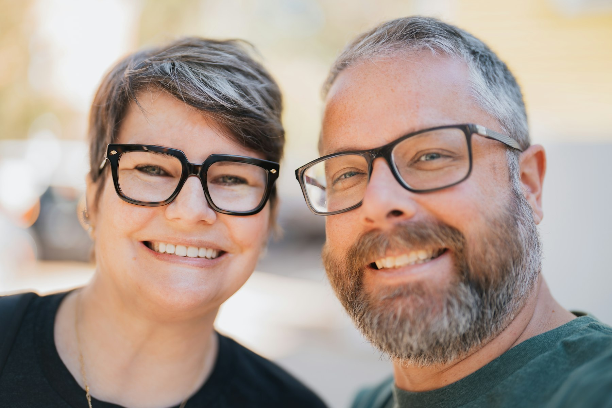
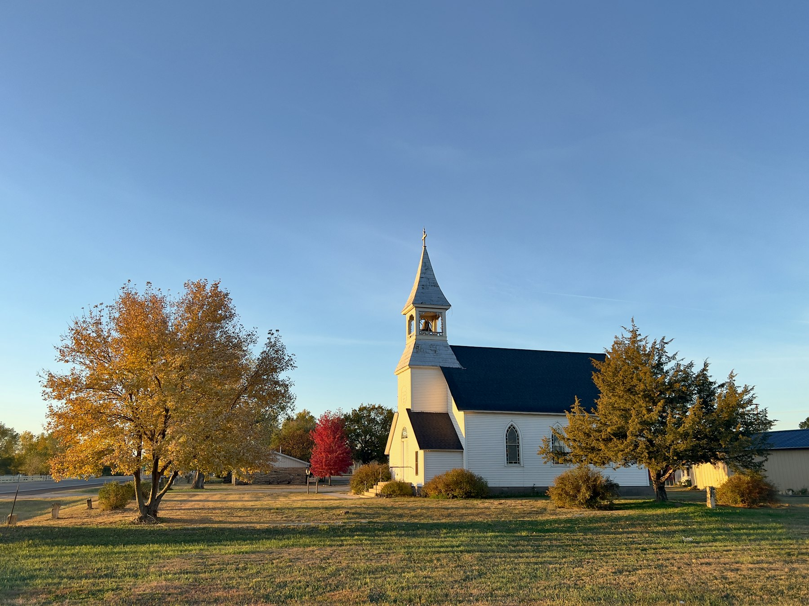
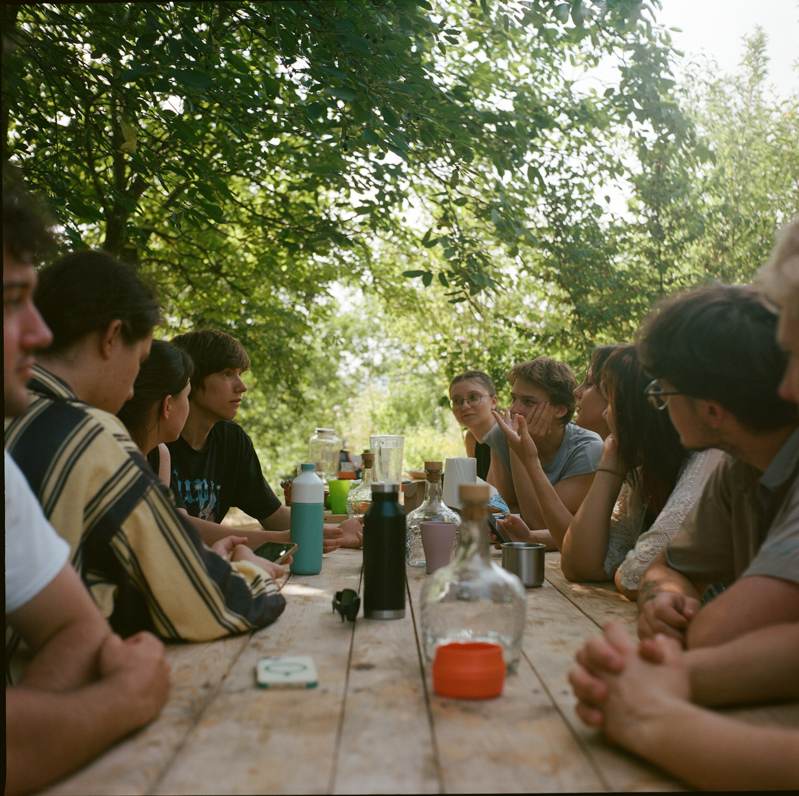
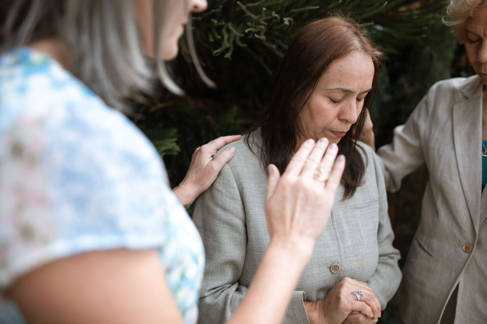
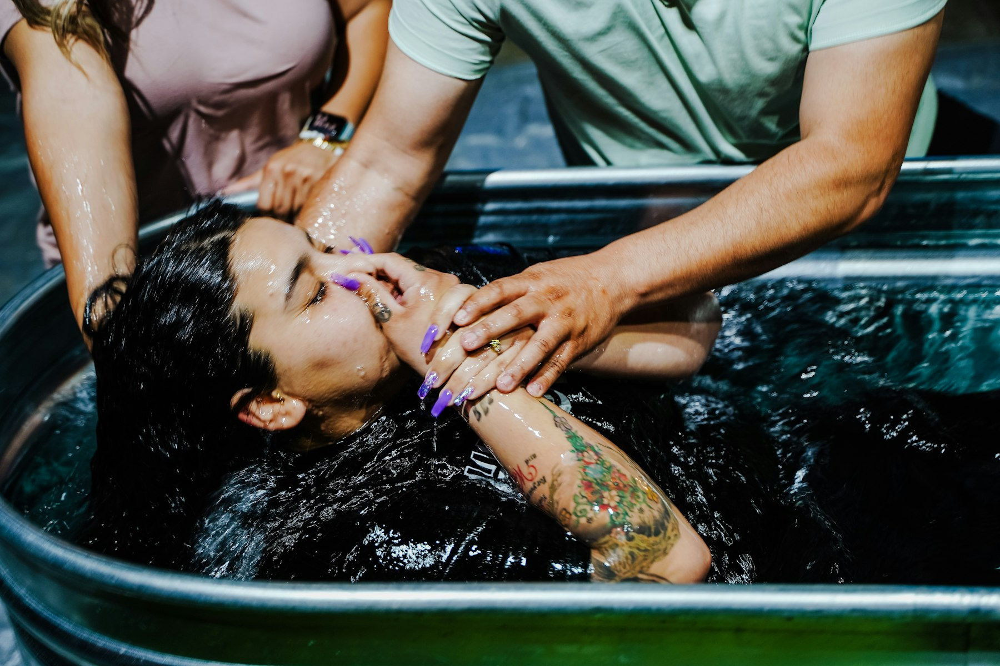

Pull up a chair.
A neighborhood church in Beaverdale with long tables and plenty of room for you, for families, for neighbors and for skeptics.
Sundays 9:00 & 10:45 AM3120 Wrenfield Ave, Des Moines

AnnouncementThe Porch Project is underway. A new kids wing and a bigger front porch.
Our heart
Love God, love the block, and keep the porch light on.
Goldenrod Commons is a church for ordinary people on ordinary streets. We eat together, pray for each other, show up when the basement floods, and keep learning what it looks like to follow Jesus right here in Beaverdale.

Your next step
Three easy ways in
Pick one. We will take it from there, at whatever pace feels right to you.

Plan Your Visit
Tell us which Sunday. We will save you a seat, show you where to park and walk your kids to check-in.
Save me a seat
Get to Know Us
We started in a living room in 2012 and we still act like it. Meet the people and hear the story.
Read our story
Give
Every gift helps feed local families, builds the Porch Project and keeps the lights on for our neighbors.
Ways to giveStart Here
New around here? Join us for lunch after church and meet the pastors over a plate of something good.
Come to lunchSmall Groups
Twenty-two living rooms across the city, every night of the week. One of them has your name on it.
Find a groupEvents
Potlucks, porch nights, Saturday service days and the occasional very serious chili cook-off.
See what is onNeed Prayer
Tell us what is heavy right now. On a real church site, our prayer team prays for you that week, by name.
Send a request
Seven days a week
The porch light is always on.
Good week or hard week, sure about God or not so sure. Come by anyway. Somebody here will learn your name and remember it next week.
Life at Goldenrod
A normal Sunday around here
Coffee in one hand, a toddler in the other, and a room full of people who are honestly glad you came.






Thinking about baptism? Our next Baptism Sunday is January 10, and we would love to walk into the water with you. Ask about baptism
Kind words
What neighbors are saying
Sample reviews written for this template preview.
We walked in not knowing a soul. By the second Sunday someone knew our kids by name and had left a pan of lasagna on our porch.

Stay in the loop
Get the Porch Letter
One short email every Thursday: what is happening Sunday, a prayer for the week, and the newest message. Five minutes, tops.
Demo only: a sample email is filled in. Nothing is sent. No spam, ever. Unsubscribe with one click.
Carrying something heavy? Send a prayer request. On a real church site, a real person reads every one.